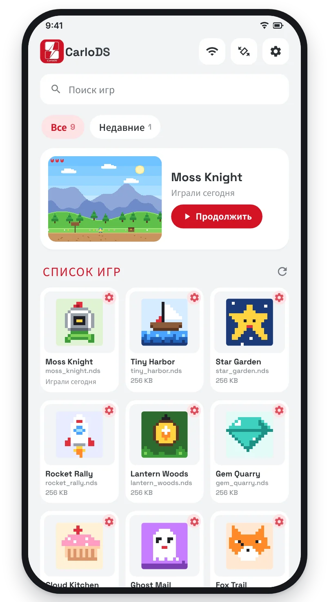
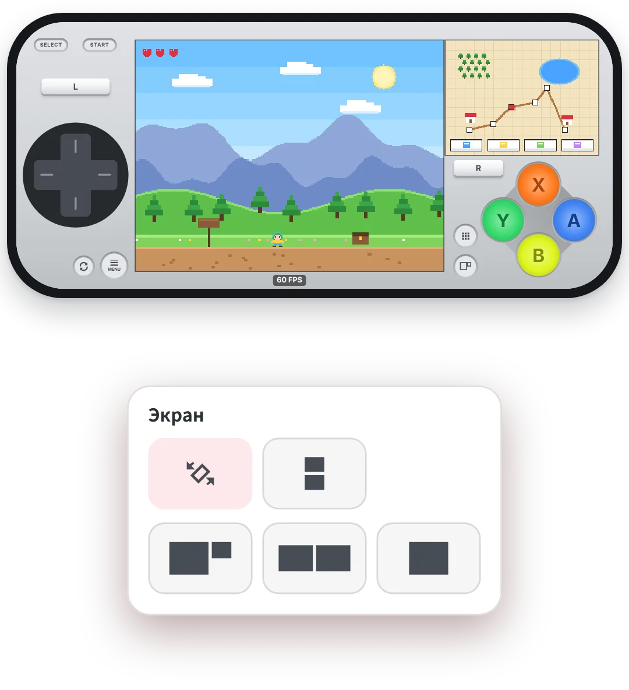
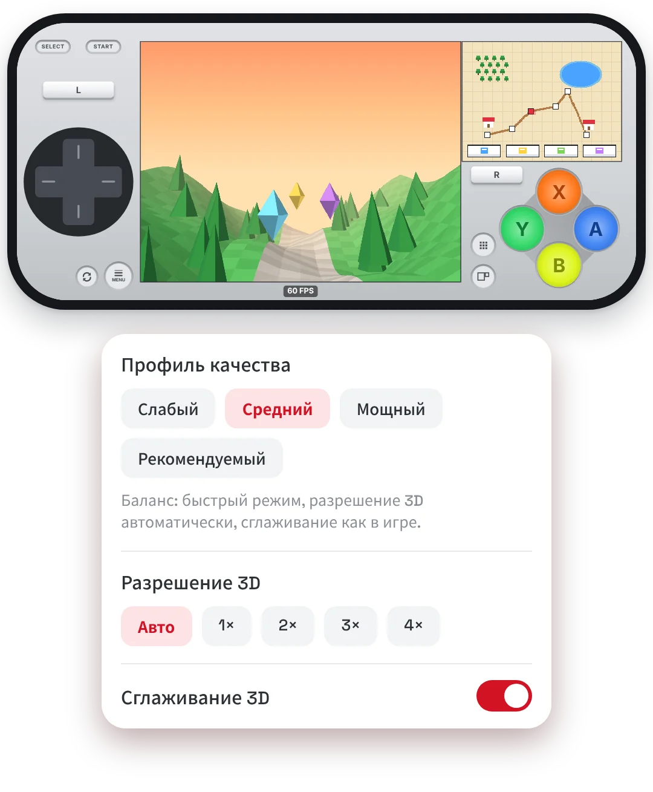
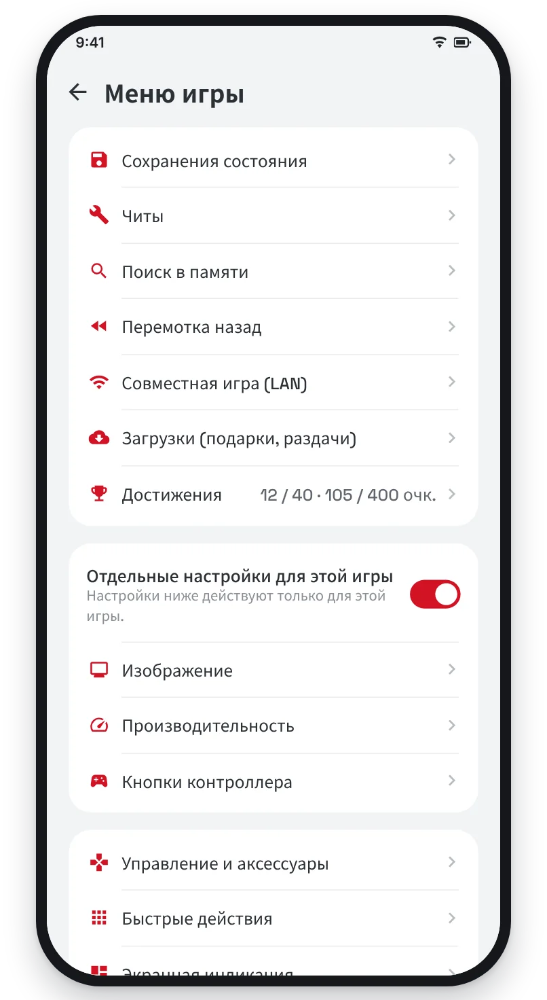
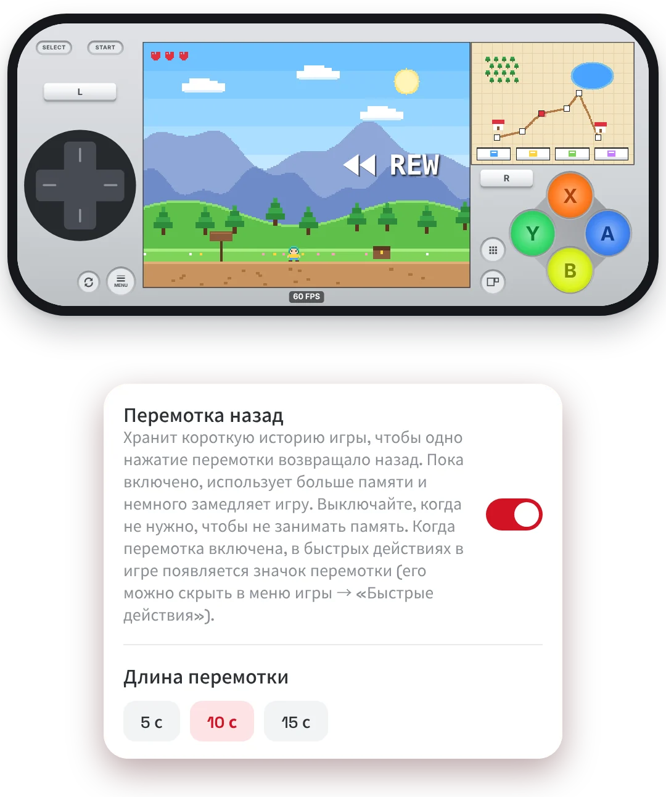

Эмулятор NDS с точным ядром: HD-3D, локальная игра, читы.

Значки и названия берутся из самих игр. Продолжайте с того же места.

CarloDS — эмулятор NDS для телефонов и планшетов на Android. Его ядро эмуляции, включая процессоры ARM9 и ARM7, 2D- и 3D-графику, звук, беспроводную связь и встроенный BIOS, изначально основано на открытом проекте SkyEmu (лицензия MIT), с тех пор во многом переписано и расширено и откалибровано по тестам на оригинальном оборудовании. Большинство игр работает без файлов BIOS; поддерживаются ZIP-архивы.
Один над другим, большой + малый, рядом или один экран — одним касанием.

Слабый, средний или мощный — одним касанием. 3D до 4×.

Сохранения, читы, перемотка, беспроводная игра, загрузки, достижения.

Нет роутера? Подойдёт точка доступа телефона.

Ищите значения в плавающем окне прямо во время игры.

Одно касание — назад на 5, 10 или 15 секунд.
